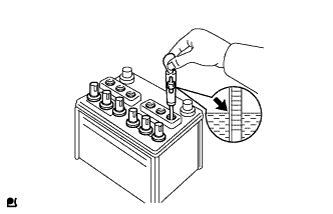
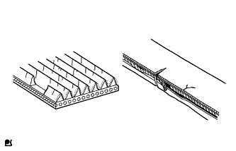
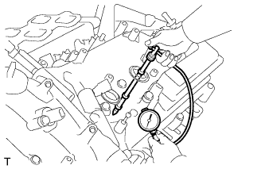

Engine Mechanical (2GR-FE) Function Inspection |
| 1. Inspect Coolant (Toyota Genuine Super LLC) |
Remove the radiator cap.
Inspect for excessive rust or scale deposits around the radiator cap and water inlet.
Install the radiator cap.
| 2. Inspect Engine Oil |
Inspect the oil for deterioration, water entry, discoloration or thinning, and replace the oil if the quality is visibly poor.
| 3. Inspect Battery Specific Gravity |
 |
Inspect the battery specific gravity of each cell.
| 4. Inspect Air Cleaner Filter Element Sub-assembly |
Inspect the air cleaner filter element for dirt and clogging.
| 5. Inspect Fan & Alternator V Belt |
 |
Inspect the entire circumference of the belt for rib condition, wear and cracks.
 |
Check that the belt is correctly installed on each pulley.
| 6. Inspect V-ribbed Belt Tensioner Assembly |
Stop the engine from idle speed and check that the belt does not protrude beyond the width of the tensioner pulley.
Remove the belt from the tensioner pulley, move the tensioner in the right and left rotation directions, and check that it does not catch.
If there is a malfunction, replace the tensioner.
Install the V-ribbed belt.
| 7. Inspect Lash Adjuster for Noise |
Race the engine several times and check that there is no tapping noise from the engine.
If abnormal noise is heard, idle the engine in a warmed-up state for 30 minutes or more, and then inspect again.
)| 8. Inspect Ignition Timing |
Inspection Using SST (TaSCAN)
Connect SST (TaSCAN) to DLC3.
Following the screen instructions, display the "ECU Data Monitor" - "Ignition Timing #1" screen and measure the ignition timing.
Display the "Active Test" screen, select "Ignition Timing #1", and measure the ignition timing with "TC Terminal ON".
Check that the ignition timing advances quickly when the engine speed is increased.
Inspection using general instruments
 |
Using SST (diagnosis check wire No.2), connect between terminals 13 (TC) ←→ 4 (CG) of the DLC3.
Remove the cowl top outside front w/ front wiper motor & link. (see)
Remove the V-bank cover.
Connect the clip of the timing light to the wire harness for the coil connector of cylinder No.1.
Check that the ignition timing is within the standard.
Disconnect terminals 13 (TC) ←→ 4 (CG) of the DLC3.
Check that the ignition timing is within the standard.
Check that the ignition timing advances quickly when the engine speed is increased.
Remove the timing light.
Install the V-bank cover.
Install the cowl top outside front w/ front wiper motor & link. (see)
| 9. Inspect Idle Speed |
Connect SST (TaSCAN) to DLC3.
Following the screen instructions, display the "ECU Data Monitor" screen and measure the engine speed.
| 10. Compression Inspection |
Remove the cowl top outside front w/ front wiper motor & link. (see)
Remove the V-bank cover.
Remove the air cleaner cap w/ air cleaner hose.
Remove the intake air surge tank assembly. (see)
Disconnect the 6 ignition coil assembly connectors.
Remove the 6 ignition coils.
Remove the 6 spark plugs.
 |
Set the compression gauge.
Depress the brake pedal, push the engine switch and measure the compression of each cylinder.
Install the 6 spark plugs.
Install the 6 ignition coils.
Connect the 6 ignition coil assembly connectors.
Install the intake air surge tank assembly. (see)
Install the air cleaner cap w/ air cleaner hose.
Install the V-bank cover.
Install the cowl top outside front w/ front wiper motor & link. (see)
| 11. Inspect CO, HC Concentration |
After maintaining the engine speed at 2500r/min for 2 minutes, inspect the CO and HC concentration at idle.